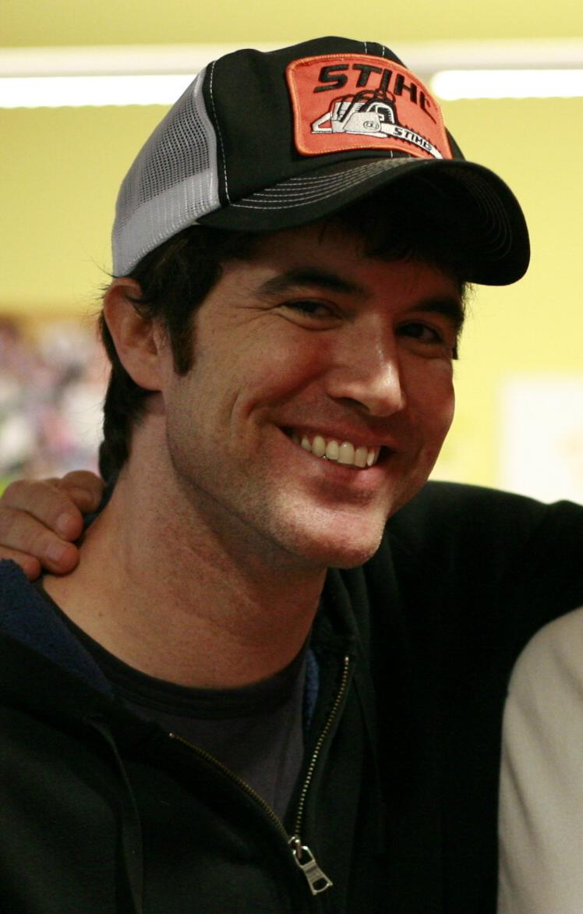

THE PEOPLE
The deepest human impulse is the most profound desire and need for communication. YouTube gave us our own personal broadcast tower from which we can transmit our home video creations. Just like newspapers, Digg has the latest going-on from across the world but what lands on Diggs front page is decided by the user. Digg states that blog can be on the same place as New York times, and it is up to the people to decide what’s important. The teens put together the tunes of music with the web. David Weekly- an MP3 pioneer, decided to launch the MP3 online to the website where the music uploaded can be downloaded. Shawn Fanning had an idea called Napster where it allows the people network who already have a music list to share it with other people instead of sitting and downloading the entire album. This is called peer-to-peer system which let the pc’s talk to another pc. After it was released, in less than 4 months, it passed the million-download mark making it the fastest spreading software.
The war between the Napster and Metallica band boosted Napster’s popularity even more leading to its user base expanding. After being filed a lawsuit against Napster by the lawyers of Metallica regarding the copyright in July 2001, the court declared to shut down Napster immediately. This led Steve Jobs to create iTunes music store where songs were sold for $.99 a piece and had a strict copy protection that made the labels very happy. A dating website called Myspace in 2003 was created by Krista Wolff and Tom Anderson. By the year 2005, the site attracted over 27 million registered users. Facebook owned by Mark Zuckerberg started growing rapidly from 10 million to 50 million active users. He mainly used to maintain a social graph to keep a track of the data and connection between the people. i.e., everyone is bound together by web relationships. Since both Myspace and Facebook became popular among people real soon, there was a competition between the two. There was a probability that both would win or lose.
Shawn Fanning: The inventor of Napster
Tom Anderson: The inventor of MySpace